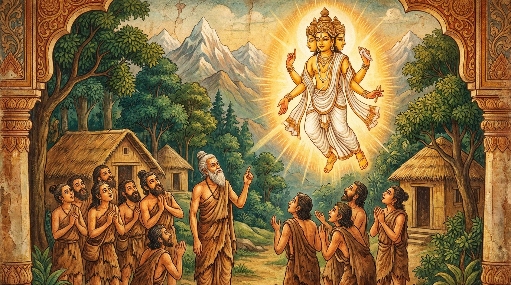

4. ඣානසෝධන ජාතකය (134)
“යෙ සඤ්ඤිනො” යන මෙම ජාතක කතාව බුදුරජාණන් වහන්සේ ජේතවනාරාමයේ වැඩවසන සමයෙහි, සංකස්ස නගර දොරටුවේදී තමන් වහන්සේ විසින් සංක්ෂිප්තව අසන ලද ප්රශ්නයට ධර්ම සේනාධිපති සැරියුත් තෙරුන් වහන්සේ විසින් විස්තරාත්මකව දෙන ලද පිළිතුර අරබයා දේශනා කරන ලද්දකි. මෙහි අතීත කතාව මෙසේය: පෙර බරණැස් නුවර බ්රහ්මදත්ත රජු රාජ්ය කරන සමයෙහි බෝධිසත්වයෝ වනයක (අරණ්යායතනයක) කළුරිය කරන අවස්ථාවේ අතවැසියන් විසින් විශේෂාධිගම ගැන විමසන ලදී. එවිට එතුමා “නෙවසඤ්ඤීනාසඤ්ඤී” (සඤ්ඤාවක් ඇත්තේත් නැත, නැත්තේත් නැත) යැයි පැවසූහ. ඉතිරිය පෙයාලයි... අතවැසියෝ ජ්යෙෂ්ඨ අතවැසි තාපසයාගේ එම විග්රහය නොපිළිගත්හ. එවිට බෝධිසත්වයෝ ආභස්සර බ්රහ්ම ලෝකයෙන් පැමිණ අහසෙහි සිට මෙම ගාථාව වදාළහ.
“සිත ඇති යම් සත්ත්ව කෙනෙක් වෙත් ද ඔවුහු දුකට පැමිණියෝ (දිළිඳු) වෙති. සිත් නැති යම් සත්ත්ව කෙනෙක් වෙත් ද ඔවුහු ද දුකට පැමිණියෝ වෙති. සිත ඇති හා සිත නැති (සඤ්ඤී හා අසඤ්ඤී) භවයන් දෙක ම දුරු කොට, ඒ (නෙවසඤ්ඤානාසඤ්ඤායතන) සමාපත්ති සුවය කෙලෙස් මල රහිතය (නිදොස් ය).”
එහි “යෙ සඤ්ඤිනො” (යම් සංඥා ඇත්තෝ) යන්නෙන් නේවසඤ්ඤානාසඤ්ඤායතන අරූප ධ්යානලාභීන් හැර සෙසු සිත සහිත සත්ත්වයන් දක්වයි. “තෙපි දුග්ගතා” (ඔවුහු ද දුගියෝය) යනු එම සමාපත්තිය නොලැබීම නිසා ඔවුහු දුගී බවට පත්වූවන් මෙනි. “යෙපි අසඤ්ඤිනො” (යම් අසංඥ වූවෝ) යන්නෙන් අසඤ්ඤ තලයේ උපන් සිත් නැති සත්ත්වයන් දක්වයි. “තෙපි දුග්ගතා” යනු ඔවුහු ද මෙම සමාපත්තිය ම නොලැබීම නිසා දුගියෝ ම වෙති. “එතං උභයං විවජ්ජය” (මේ දෙකම දුරු කරව) යනු මේ සඤ්ඤී භවය සහ අසඤ්ඤී භවය යන දෙකම අත්හරින්න යැයි අතවැසියාට අවවාද කරයි. “තං සමාපත්තිසුඛං අනඞ්ගණන්ති” යනු එම නේවසඤ්ඤානාසඤ්ඤායතන සමාපත්තිය ශාන්ත බැවින් ‘සැප’ යැයි සම්මතයට ගිය ධ්යාන සැපය ‘අනංගණ’ හෙවත් නිදෝෂී බවයි. බලවත් සිතේ ඒකාග්රතාව ඇති ස්වභාවය නිසා ද එය “අනඞ්ගණ” නම් විය.
මෙසේ බෝධිසත්වයෝ ධර්මය දේශනා කොට, ජ්යෙෂ්ඨ අතවැසියාගේ ගුණ කියා නැවත බ්රහ්ම ලෝකයට ම ගියහ. එකල්හි සෙසු තාපසයෝ ජ්යෙෂ්ඨ අතවැසියාගේ වචනය පිළිගත්හ.

බුදුරජාණන් වහන්සේ මෙම ධර්ම දේශනාව ගෙනහැර දක්වා ජාතකය නිම කළ සේක. “එකල ජ්යෙෂ්ඨ අතවැසියා වූයේ දැන් මේ සැරියුත් තෙරුන් ය. මහා බ්රහ්මයා වූයේ මම ම වෙමි”යි වදාළ සේක.
සිව්වැනි වූ ඣානසෝධන ජාතක වර්ණනාවයි.